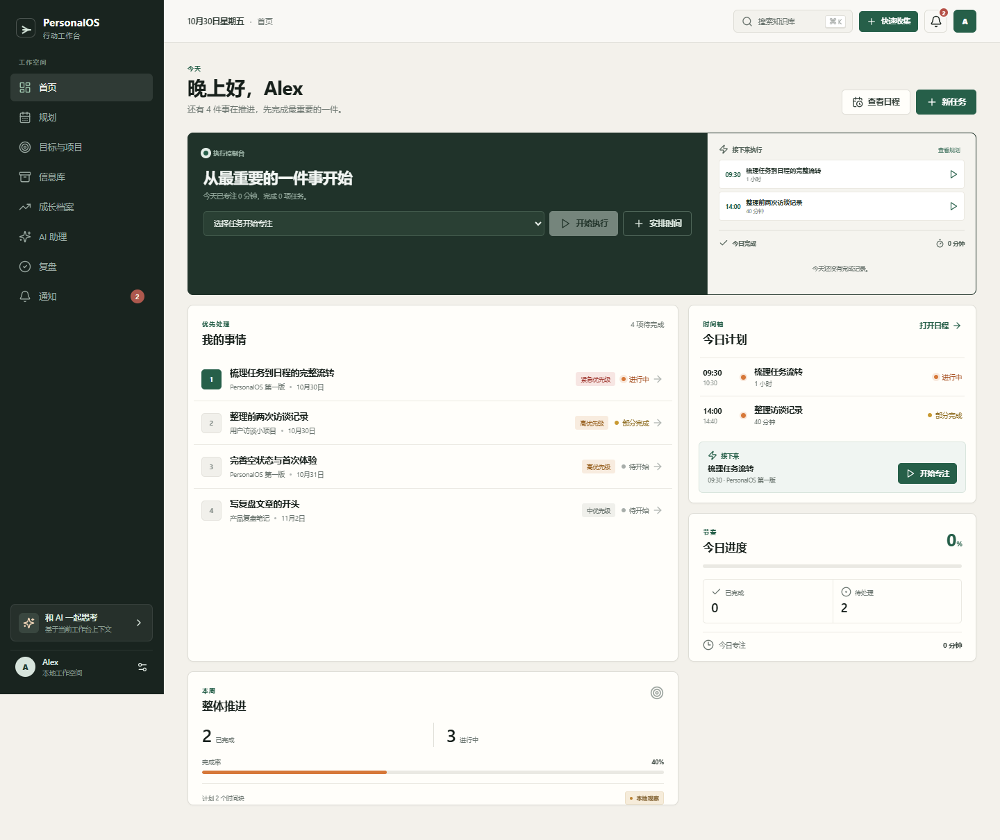
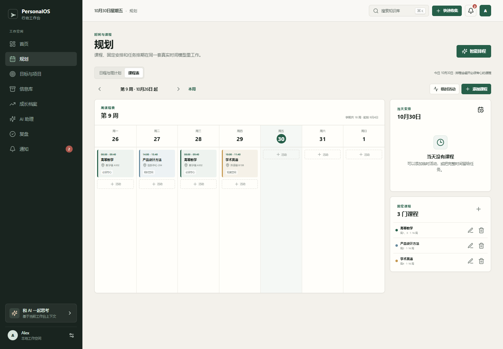
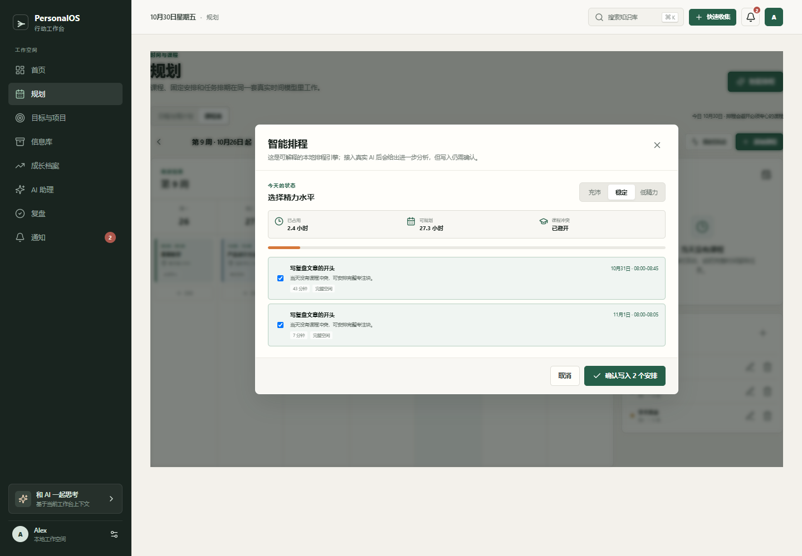
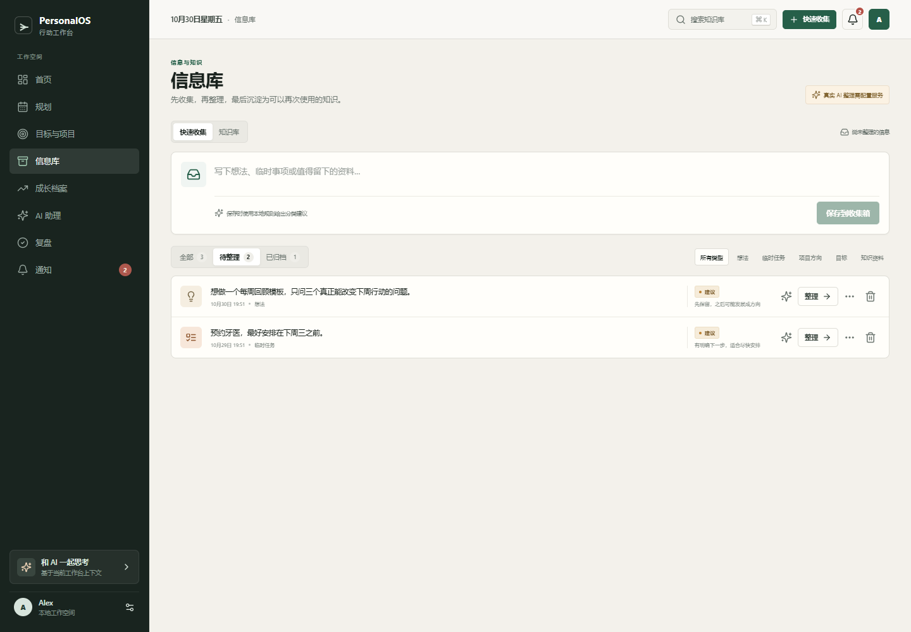
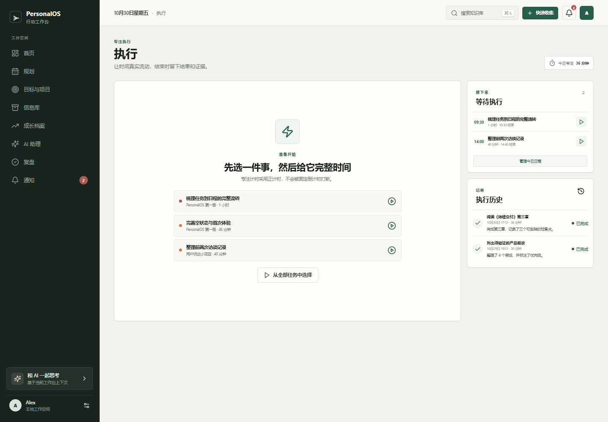
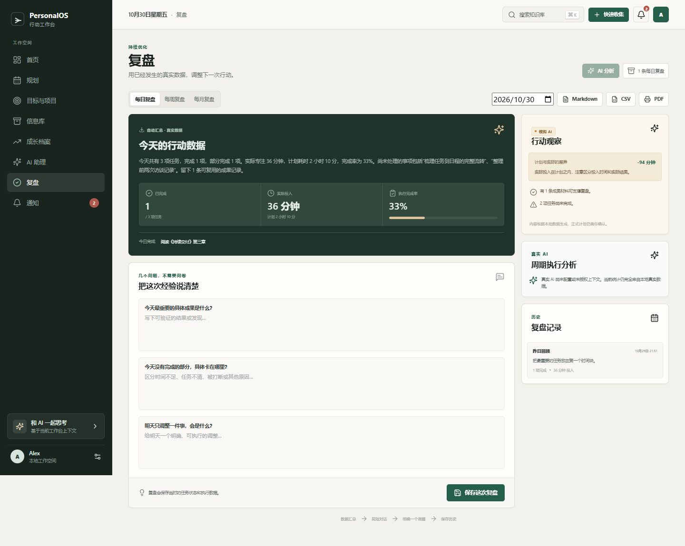
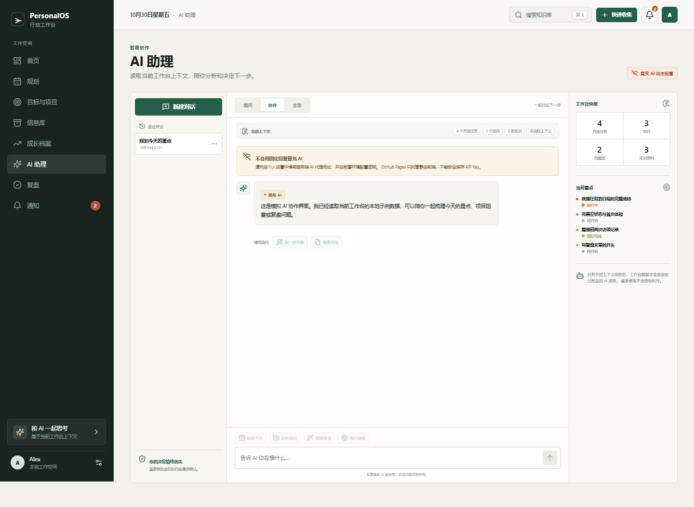
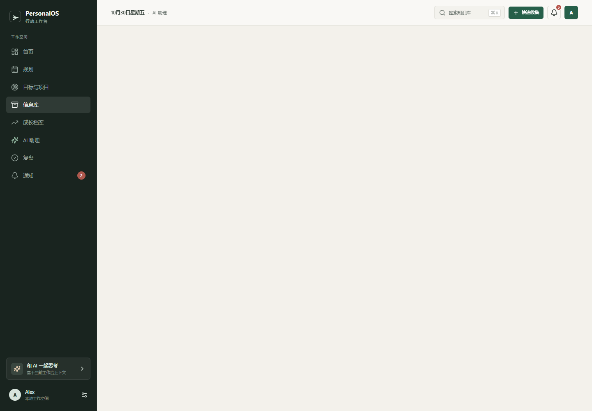
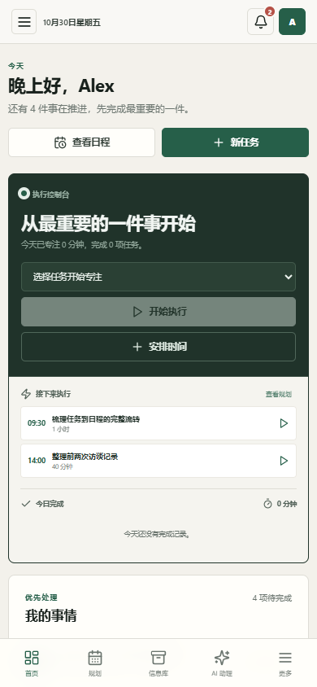

已经真实可用
- 首页开始、暂停、刷新恢复、结束专注，并同步任务状态。
- 文字、网页链接、图片和文件成果；图片预览、文件下载使用 IndexedDB。
- 固定课程、上课周次、调课、停课和临时活动独立保存。
- 排程会检查课程、日程、截止时间、耗时、优先级和历史执行比例。
- 信息库统一收集与知识入口，转化后保存真实对象 ID。
- 每日、每周、每月复盘与 Markdown、CSV、打印/PDF 导出。
需要外部配置或仍有限制
- 真实 AI 前端与服务端代理代码已存在，但公开 GitHub Pages 无法运行服务端。
- 需要部署 Vercel AI 代理并设置服务端 OPENAI_API_KEY，不能把密钥放进前端。
- 文件当前只存于单浏览器 IndexedDB，不会跨设备同步。
- 未配置 AI 时，对话发送和 AI 整理保持禁用，不会生成固定回复冒充 AI。
- JSON 备份包含结构化数据，不包含 IndexedDB 文件二进制。
01
已真实实现
首页 · 执行控制台
不需要进入独立执行页即可开始、暂停和结束任务。

桌面首页：当前执行、接下来任务、今日完成、今日计划与进度联动。
真实业务
- 正计时和暂停状态写入共享 FocusSession。
- 刷新后从时间戳与暂停累计恢复，不依赖后台倒计时。
- 结束成果写入 Evidence，并更新任务 completedAt 和状态。
- 部分完成必须填写剩余工作。
- 完整执行页仍保留在旧路由 #/focus。
02
已真实实现
规划 · 日程、课程与智能排程
日程不再是独立一级入口；旧 #/schedule 仍然兼容。

周课程表与当天课程，固定课程和临时变动分开存储。

排程候选显示理由；用户勾选并确认后才写入正式日程。
课程模型
- 课程名称、星期、周次、地点、教师和备注。
- 必须专心、轻度空闲、相对空闲三种课堂属性。
- 停课、调课、临时活动使用 CourseChange，不覆盖原课程。
排程输入
- 课程与临时变动、已有日程、任务截止日和预计耗时。
- 优先级、用户精力、历史实际专注比例。
- 必须专心的课程会被硬冲突排除。
- 时间不足时会列出无法安排的任务，而不是强行塞入。
03
已真实实现
信息库 · 收集与知识统一入口
收集箱与知识库合并入口，但保留两套数据模型。

快速收集与知识库使用分段入口，旧 #/inbox 与 #/knowledge 路由仍兼容。
真实能力
- 文字与链接收集、分类建议、搜索、筛选、归档和编辑。
- 可转换为目标、项目、任务或知识资料。
- 转换结果保存 convertedToId，不再只保存分类字符串。
- 配置真实 AI 后可调用 AI 整理，返回建议类型并要求确认。
- 未配置时仅使用本地规则，并明确标记“非 AI”。
04
已真实实现
成果证明 · 多种材料
文字、链接、图片和文件与任务、项目、专注记录关联。

完整执行页仍保留；每项任务可追加多条成果。
文件方案与限制
- 图片和文件保存在浏览器 IndexedDB 的 personal-os-files。
- 图片生成真实 Blob URL 预览，文件可下载。
- 单个文件限制 25 MB。
- 元数据保存在 Evidence，项目中可通过任务追溯。
- GitHub Pages 不提供安全云文件上传；跨设备文件存储仍需 Supabase Storage 或对象存储。
05
已真实实现
复盘 · 周期统计与导出
每日、每周、每月使用不同分析内容和真实周期边界。

复盘按日期选择周期，支持 Markdown、CSV 与浏览器打印/PDF。
统计与导出
- 任务按截止、完成、日程和专注记录归入周期。
- 计划分钟来自任务预估，实际分钟来自真实 FocusSession。
- 每日/每周/每月显示不同项目、成长和问题视角。
- Markdown 与 CSV 为真实文件下载。
- PDF 通过独立打印视图生成，可选择浏览器“保存为 PDF”。
- 真实 AI 分析仅在服务配置和上下文授权后可用。
06
代码就绪 · 服务待配置
真实 AI · 服务端代理
代码已经区分“已配置真实 AI”和“本地非 AI 检索”。

公开 GitHub Pages 没有服务端，因此当前页面不会生成伪 AI 回复。

已经实现的接入代码
- api/ai.ts 服务端代理，密钥只读取服务端环境变量。
- ALLOWED_ORIGINS 限制允许来源。
- 前端支持加载、超时、错误和重试。
- 顾问、协作、主动模式使用不同系统指令。
- 上下文授权后可发送目标、项目、任务、课程、日程、执行、成果、信息库、复盘和成长数据。
- AI 创建任务建议需要用户确认。
上线前需要
- 将 api/ai.ts 部署到 Vercel 或其他 Serverless 平台。
- 配置 OPENAI_API_KEY、OPENAI_MODEL 和 ALLOWED_ORIGINS。
- 在 PersonalOS 个人设置中填写代理地址并授权上下文。
07
已真实实现
手机端 · 核心入口重排
首页可直接执行，规划与信息库进入底部主导航。

手机首页优先保留执行、任务与今日计划。
移动端导航
- 底栏：首页、规划、信息库、AI 助理、更多。
- 完整执行页可从首页和“更多”进入。
- 课程表在窄屏中保持横向周视图，页面本身不产生横向溢出。
- 弹窗改为底部面板，表单与导出控件自动换行。
V2 数据与安全说明
结构化数据仍在 localStorage，但 V2 版本迁移会先创建时间戳备份；图片和文件进入 IndexedDB。 所有页面共享同一任务、课程、日程、执行和成果对象。真实 AI 密钥不在前端、构建产物或 GitHub 仓库中； 没有服务端配置时明确显示待配置，而不是回退到固定文案冒充模型。